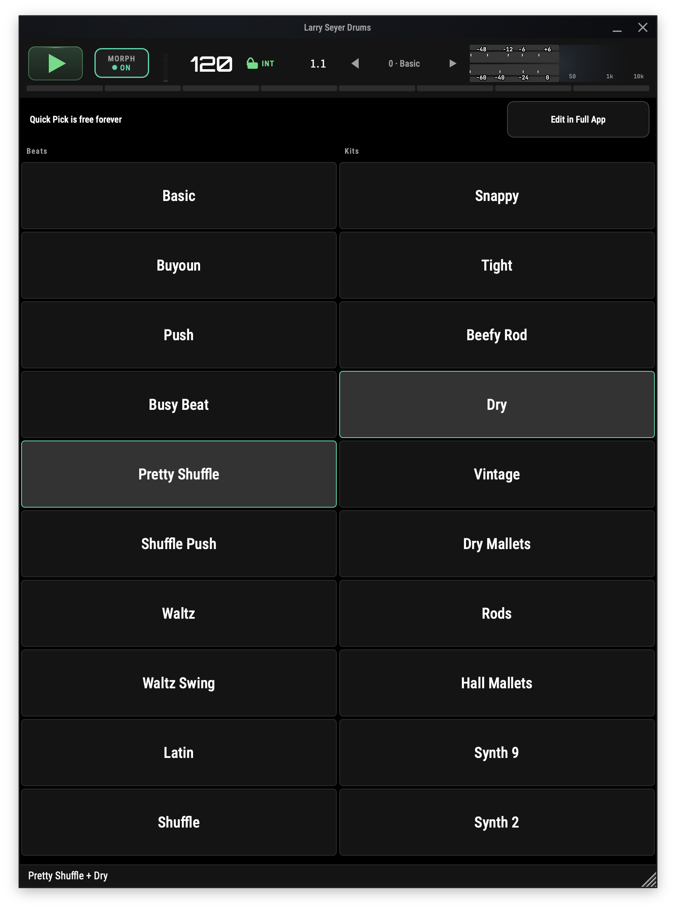
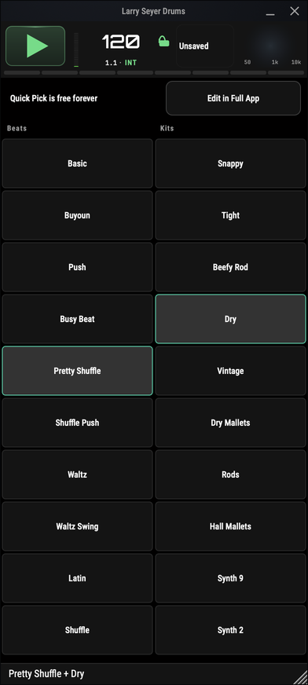

← All chapters · Larry Seyer Drums
Chapter 03 · Beta tester guide
Quick Pick and Your First Groove
Temporary quick-start for TestFlight testers until the tutorial videos are ready.
Quick Pick: playing in seconds
In the standalone app, Quick Pick is the first screen after the splash, and it’s the fastest way to hear the instrument. Choose a beat, choose a kit, and you’re playing.
The heading over the left (or top) list is Beats. The heading over the other list is Kits — those are player presets. Beats and Kits are separate choices. Change one and the other stays put, so any of the 10 beats works with any of the 10 kits, for 100 combinations.
The factory beats, as they appear on screen, are:
- Basic
- Buyoun
- Push
- Busy Beat
- Pretty Shuffle (the example I use throughout)
- Shuffle Push
- Waltz
- Waltz Swing
- Latin
- Shuffle
The factory kits are:
- Snappy
- Tight
- Beefy Rod
- Dry
- Vintage
- Dry Mallets
- Rods
- Hall Mallets
- Synth 9
- Synth 2
A fresh installation highlights Pretty Shuffle and Dry. Each factory beat plays as its Verse. Choosing a kit loads that player preset’s sound. While it loads, the kit slot shows “Loading kit…” and the footer reads “Loading” plus the kit name.
The footer otherwise shows the selected beat and kit, joined with a plus sign — for example, “Pretty Shuffle + Dry”.
Quick Pick remembers the last pair you chose and the tempo you played it at. When you come back, that pair is highlighted. Highlighting it is not the same thing as a Song you have saved.
The button in the header is Edit in Full App. Press it when you’re ready to leave Quick Pick. You land on the Players page, and from there you can edit anything in the full app: the players, the arrangement, the kit, the mixer, or a brand-new song. If Show Quick Pick at startup is on (that’s the default; testers can turn it off in the three-dot menu, under App Settings → Quick Pick), the app also turns your current Quick Pick pair into a song you can edit: it is named after the beat (so Pretty Shuffle if you kept the default), Player 1 has one looping pill, and Players 2 through 4 start empty. You can add more pills, change kits, or throw that song away and start another.
You can reopen Quick Pick from the three-dot menu, or with the Q key in the default Larry Seyer Drums key scheme.
If you have a MIDI controller, there is a Quick Pick MIDI channel so you can change slots from any screen.
To save your own beat or kit into a slot, right-click or press and hold. If a Drums pattern is playing, you’ll see “Save” plus that name plus “here”. If you’ve already replaced a factory slot, you can also “Restore factory beat” or “Restore factory preset”. Saving over a slot you already saved yourself asks “Replace slot …?” first.
A Mac or desktop plug-in window opens on the full app pages, not on this screen. The compact AUv3 window on iPhone and iPad is a Quick Pick view; see Using the Plug-in in a Host.
On Mac and iPad
On an iPad, Quick Pick uses the same layout as the Mac screenshot below.

On iPhone
On an iPhone the layout follows the screen: in portrait, beats are on the left and kits on the right; in landscape, beats are the top row and kits are the bottom row.

Build your own song
Quick Pick is only a starting point. You are not limited to those ten beats, and you don’t have to keep the song Edit in Full App made for you. You can build a new arrangement — or start from a blank timeline — and drag pills onto the song.
Once you’ve heard Quick Pick and pressed Edit in Full App, try this:
- Open the three-dot menu, open the Song group, and choose New. A dialog titled New Song? appears. It says you are starting an empty song, and that only unsaved changes to the current song are lost. Press New.
- Open the Songs page. The timeline lanes are empty. Across them you’ll see the hint Drag a section from below onto a lane. Below the lanes (or nearby, depending on the device) is the pill pool: one column per player, with phrases you can drag in. After New Song, the pool starts on the Blank 120 style, which is a silent style for building from nothing.
- In Player 1’s column, pick a style you want to play — Pretty Shuffle is a good first try. (In the pool, style folders may still show a tempo in the name, such as Pretty Shuffle 120.)
- Drag an Intro, then a Verse, a Chorus, another Verse, and a Bridge onto Player 1’s pill row. The first pill on an empty lane starts at bar 1 and can set the tempo from that style. After that, a pill lands where you drop it. Gaps are allowed; a gap is silence for that player.
- Press Play and listen. Tap a phrase tab to jump to a section.
- Turn on Post-Fill on the Verse (the bottom-right corner of the pill) and listen to the fill into the next section.
- Change one pill’s energy and hear how the same notes feel different.
- From the three-dot menu, open the Song group and use Save As… to put the song into a bank slot and give it a name.
You can also skip New Song and keep editing the Quick Pick song: go to the Songs page and drag more sections onto Player 1, or onto Players 2 through 4, which started empty.
Save is what makes an edit permanent. If you only leave the page or switch songs without saving, you can lose the work you just did.
When you want a quick thrill, play the same arrangement at Chilled, then at Energetic, using the energy row.
On a Mac or iPad you drag with the mouse or trackpad (or a finger on iPad). On iPhone, press and drag. An upright iPhone shows a timeline per player; in compact landscape you’ll use the P1–P4 launcher.
You’ll find the rest of the arranger — pill corners, lifts, banks, launching sections live — in Songs: Arranging.
Previous: Getting Started and Getting Sound · Index · Next: Players